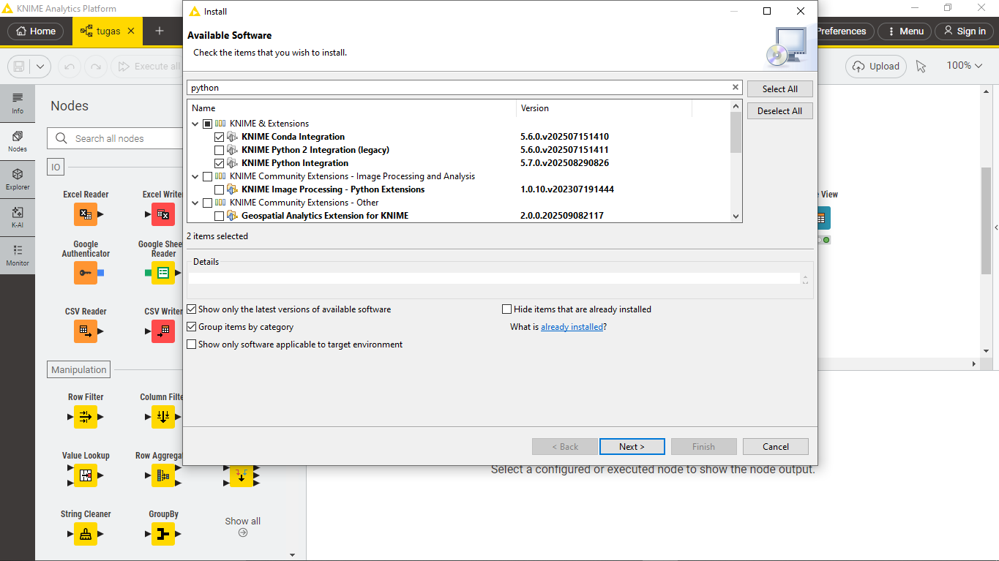
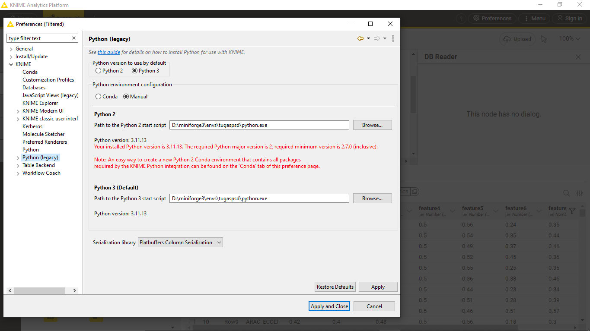
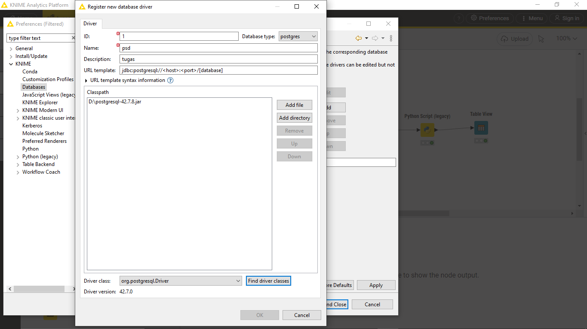
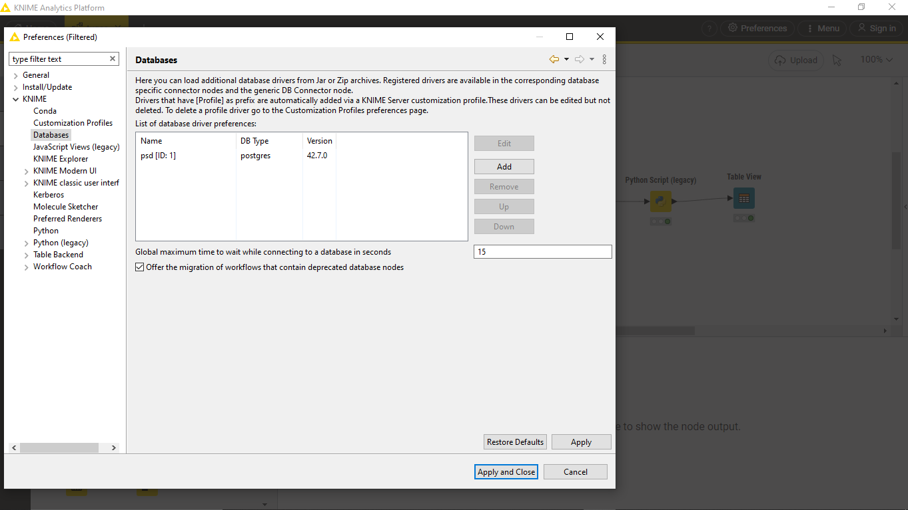
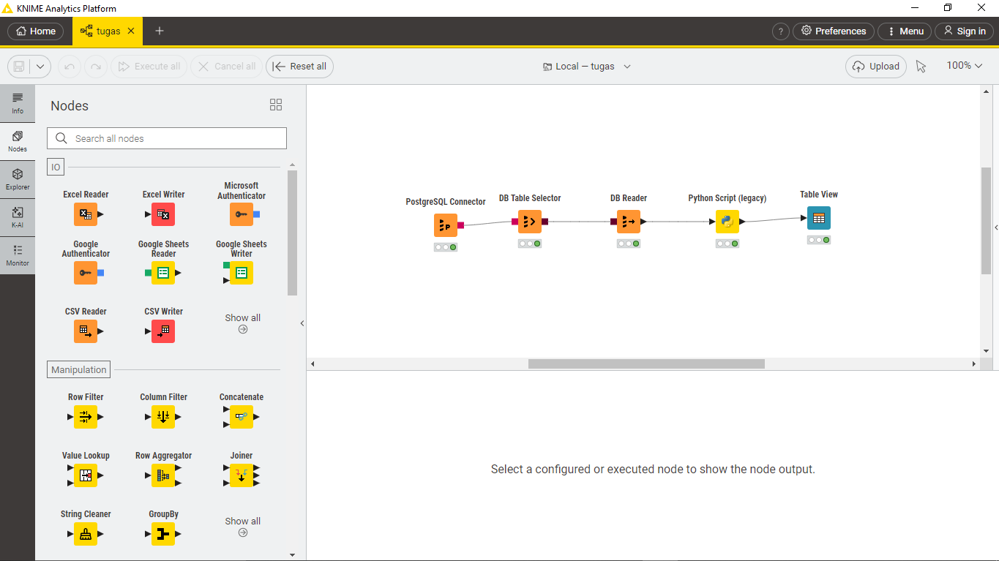
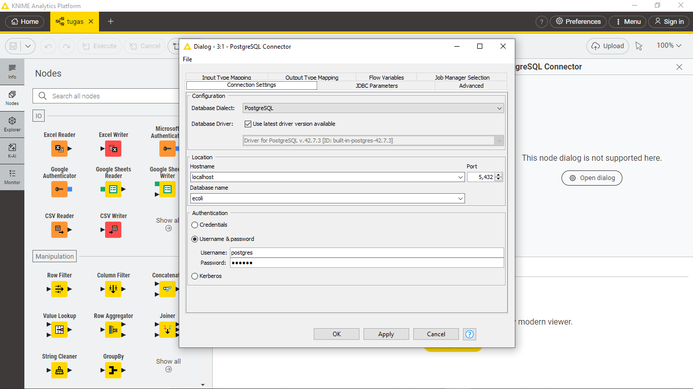
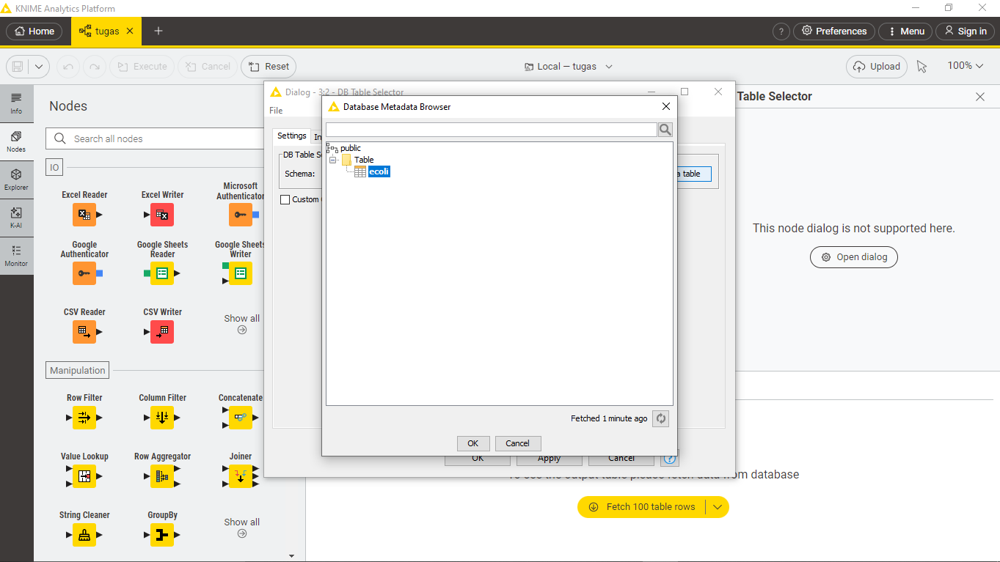
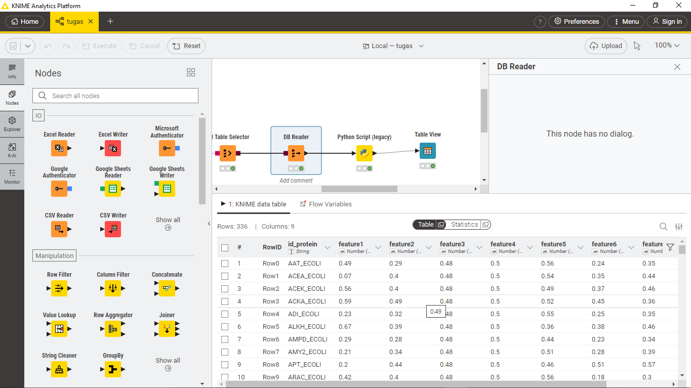

Tugas pra-UTS PSD#
Analisis Data E. coli Menggunakan KNIME, PostgreSQL, dan Python untuk Prediksi Klasifikasi Protein#
Oleh : Hajjid Rafi Mumtaz#
1. Instalasi teknologi yang diperlukan.#
KNIME Analytics Platform: Alat utama untuk membangun alur kerja visual.
Miniforge (Conda): Untuk manajemen environment Python yang terisolasi.
PostgreSQL: Database tempat data disimpan.
1.1 Membuat dan Mengkonfigurasi Environment Conda#
Kita memerlukan environment Python khusus yang berisi semua library yang dibutuhkan oleh KNIME.
Buka Miniforge Prompt.
Buat environment baru bernama tugaspsd (atau nama lain yang sesuai) dengan perintah:
conda create --name tugaspsd python=3.9 pandas psycopg2-binary scikit-learn matplotlib -y
---------------------------------------------------------------------------
ValueError Traceback (most recent call last)
Cell In[1], line 1
----> 1 get_ipython().run_line_magic('conda', 'create --name tugaspsd python=3.9 pandas psycopg2-binary scikit-learn matplotlib -y')
File C:\xampp\htdocs\PSDs\.venv\Lib\site-packages\IPython\core\interactiveshell.py:2504, in InteractiveShell.run_line_magic(self, magic_name, line, _stack_depth)
2502 kwargs['local_ns'] = self.get_local_scope(stack_depth)
2503 with self.builtin_trap:
-> 2504 result = fn(*args, **kwargs)
2506 # The code below prevents the output from being displayed
2507 # when using magics with decorator @output_can_be_silenced
2508 # when the last Python token in the expression is a ';'.
2509 if getattr(fn, magic.MAGIC_OUTPUT_CAN_BE_SILENCED, False):
File C:\xampp\htdocs\PSDs\.venv\Lib\site-packages\IPython\core\magics\packaging.py:27, in is_conda_environment.<locals>.wrapper(*args, **kwargs)
25 # TODO: does this need to change on windows?
26 if not Path(sys.prefix, "conda-meta", "history").exists():
---> 27 raise ValueError(
28 "The python kernel does not appear to be a conda environment. "
29 "Please use ``%pip install`` instead."
30 )
31 return func(*args, **kwargs)
ValueError: The python kernel does not appear to be a conda environment. Please use ``%pip install`` instead.
Aktifkan environment:
conda activate tugaspsd
Install library imbalanced-learn dari channel conda-forge:
conda install -c conda-forge imbalanced-learn -y
1.2 Mengintegrasikan Python dengan KNIME#
Langkah krusial adalah menghubungkan KNIME dengan environment Conda yang baru dibuat.
Buka KNIME, lalu navigasi ke File > Preferences.
Pilih KNIME > Python Integration.
Pilih opsi Conda dan pilih environment tugaspsd dari daftar. Jika tidak terdeteksi, pilih Manual dan arahkan ke file python.exe di dalam folder environment Anda (contoh: D:\miniforge3\envs\tugaspsd\python.exe).
Klik Apply and Close.
 
2. Membangun Alur Kerja (Workflow) di KNIME#
2.1 Koneksi ke Database PostgreSQL.#
Dua node utama digunakan untuk mengambil data:
PostgreSQL Connector: Node ini dikonfigurasi dengan kredensial database (host, port, nama database, username, dan password) untuk membuat koneksi.
DB Table Selector: Node ini menerima koneksi dari node sebelumnya dan digunakan untuk memilih tabel yang akan digunakan.
DB Reader: Node ini menerima koneksi dari node sebelumnya dan mengeksekusi query SQL sederhana untuk mengambil seluruh data dari tabel ecoli. Contoh query: SELECT * FROM ecoli;
jangan lupa untuk menginstall dan mengintegrasikan Driver PostgreSQL sebelum melakukan koneksi.
langkah integrasi driver  
workflow/nodes yang digunakan 
koneksi postgre connector 
table selector 
Hasil yang ditampilkan oleh DB Reader 
2.2. Eksekusi Script Python untuk Pemrosesan Data#
Inti dari analisis ini berada di dalam satu node Python Script. Node ini menerima tabel data dari DB Query Reader sebagai input dan menjalankan serangkaian tugas kompleks:
Penanganan missing value: Mengisi nilai numerik yang kosong dengan median.
Deteksi Outlier: Menggunakan metode IQR untuk mengidentifikasi dan memisahkan data outlier.
Pemisahan Fitur & Target: Memisahkan kolom fitur (prediktor) dari kolom target (class_label).
Penyeimbangan Kelas/Data Balancing (SMOTE): Mengatasi masalah kelas tidak seimbang dengan membuat sampel sintetis untuk kelas minoritas.
untuk script python terlampir dibawa ini :
# Import library
import numpy as np
import pandas as pd
import matplotlib.pyplot as plt
from sklearn.model_selection import train_test_split
from sklearn.preprocessing import StandardScaler
from sklearn.naive_bayes import GaussianNB
from imblearn.over_sampling import SMOTE
# === 1. Load dataset dari KNIME dan buat salinannya ===
dataset = input_table_1.copy()
# === 2. Cek dan tangani missing values ===
print("Jumlah missing values sebelum penanganan:")
print(dataset.isnull().sum())
dataset = dataset.fillna(dataset.median(numeric_only=True))
print("\nJumlah missing values sesudah penanganan:")
print(dataset.isnull().sum())
# === 3. Deteksi dan hapus outlier menggunakan metode IQR ===
numerical_cols = dataset.select_dtypes(include=[np.number]).columns
Q1 = dataset[numerical_cols].quantile(0.25)
Q3 = dataset[numerical_cols].quantile(0.75)
IQR = Q3 - Q1
batas_bawah = Q1 - 1.5 * IQR
batas_atas = Q3 + 1.5 * IQR
is_outlier = ((dataset[numerical_cols] < batas_bawah) | (dataset[numerical_cols] > batas_atas)).any(axis=1)
outliers_detected = dataset[is_outlier]
print(f"\nJumlah outlier yang terdeteksi: {len(outliers_detected)}")
dataset_no_outlier = dataset[~is_outlier]
print(f"Jumlah data sebelum hapus outlier: {len(dataset)}")
print(f"Jumlah data sesudah hapus outlier: {len(dataset_no_outlier)}")
# === 4. Pisahkan fitur (X) dan target (y) ===
target_col = 'class_label'
X = dataset_no_outlier.drop(columns=[target_col, 'id_protein'])
y = dataset_no_outlier[target_col]
# === 5. Balancing dataset menggunakan SMOTE ===
# Cek jika ada kelas dengan sampel < 2, yang membuat SMOTE gagal
min_class_count = y.value_counts().min()
if min_class_count < 2:
X_res, y_res = X, y
print("\nSMOTE dilewati karena ada kelas dengan sampel < 2.")
else:
smote = SMOTE(random_state=42, k_neighbors=min_class_count - 1)
X_res, y_res = smote.fit_resample(X, y)
print(f"\nJumlah data sebelum SMOTE: {y.value_counts().to_dict()}")
print(f"Jumlah data sesudah SMOTE: {pd.Series(y_res).value_counts().to_dict()}")
# === 6. Split data (train dan test) ===
X_train, X_test, y_train, y_test = train_test_split(X_res, y_res, test_size=0.2, random_state=42)
# === 7. Standarisasi fitur ===
sc = StandardScaler()
X_train = sc.fit_transform(X_train)
X_test = sc.transform(X_test)
# === 8. Naive Bayes (GaussianNB) ===
classifier = GaussianNB()
classifier.fit(X_train, y_train)
# === 9. Prediksi ===
y_pred = classifier.predict(X_test)
# === 10. Hasil prediksi ===
hasil = pd.DataFrame({
'Actual': y_test,
'Predicted': y_pred
}).reset_index(drop=True)
print("\nContoh hasil prediksi:")
print(hasil.head())
# === 11. Visualisasi distribusi kelas setelah SMOTE ===
fig, ax = plt.subplots(figsize=(6, 4))
pd.Series(y_res).value_counts().plot(kind='bar', ax=ax, color='skyblue')
ax.set_title("Distribusi Kelas Setelah SMOTE")
ax.set_xlabel("Kelas")
ax.set_ylabel("Jumlah Data")
# === 12. Output ke KNIME ===
X_test_df = pd.DataFrame(X_test, columns=X.columns)
output_table_1 = hasil
output_table_2 = dataset_no_outlier
output_table_3 = outliers_detected
output_image_1 = fig
3. Analisis Hasil dan Output#
3.1 Output dari Script Python.#
Node Python Script dikonfigurasi untuk menghasilkan beberapa output:
Tabel Hasil Prediksi: Tabel perbandingan antara kelas aktual (Actual) dan kelas yang diprediksi (Predicted).
Tabel Data Bersih: Dataset setelah outlier dihilangkan.
Tabel Outlier: Daftar baris data yang terdeteksi sebagai outlier.
OUTPUT :
Jumlah missing values sebelum penanganan:
id_protein 0
feature1 0
feature2 0
feature3 0
feature4 0
feature5 0
feature6 0
feature7 0
class_label 0
dtype: int64
Jumlah missing values sesudah penanganan:
id_protein 0
feature1 0
feature2 0
feature3 0
feature4 0
feature5 0
feature6 0
feature7 0
class_label 0
dtype: int64
Jumlah outlier yang terdeteksi: 0
Jumlah data sebelum hapus outlier: 336
Jumlah data sesudah hapus outlier: 336
Jumlah data sebelum SMOTE: {'cp': 143, 'im': 77, 'pp': 52, 'imU': 35, 'om': 20, 'omL': 5, 'imS': 2, 'imL': 2}
Jumlah data sesudah SMOTE: {'cp': 143, 'im': 143, 'imS': 143, 'imL': 143, 'imU': 143, 'om': 143, 'omL': 143, 'pp': 143}
Contoh hasil prediksi:
Actual Predicted
0 im pp
1 om pp
2 imL imL
3 imS imS
4 pp pp
Dari hasil yang didapat, terlihat bahwa teknik SMOTE berhasil menyeimbangkan distribusi kelas, yang merupakan langkah penting untuk mencegah bias pada model machine learning.